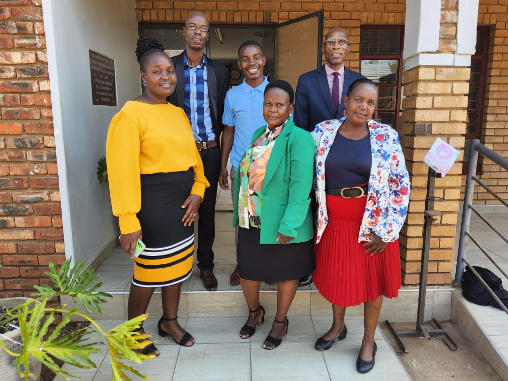
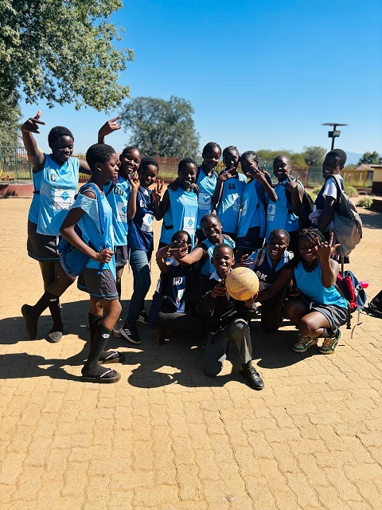
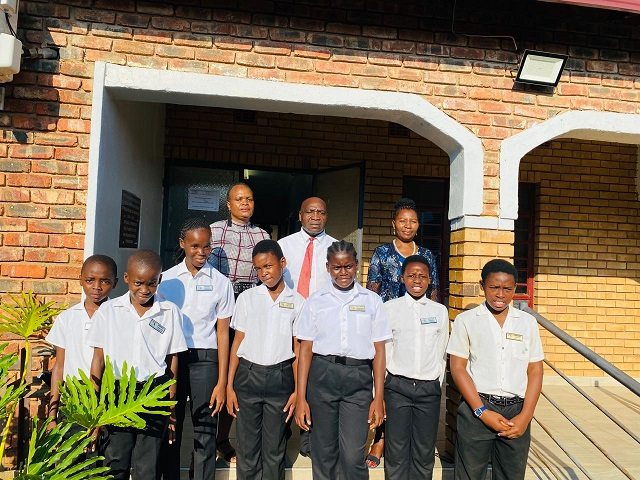

Tswinga Primary School


Learn more about our history, vision and excellence

Tswinga Primary School was established in 1954 under the leadership of His Excellency Chief Tshishonge.
Since then, the school has grown into a respected institution dedicated to quality education, discipline, leadership, and community development.
For generations, we have remained committed to shaping young minds and building a strong future for our learners.
Learners
Teachers
Department Heads
Deputy Principals
To deliver quality education by equipping learners with critical thinking, honesty, compassion, and a global outlook.
We develop learners holistically—spiritually, morally, intellectually, socially, emotionally, and physically—through collaboration with stakeholders.

School Principal
At Tswinga Primary School, we are committed to nurturing excellence in every learner.
Our goal is to provide a safe and supportive environment where every child can thrive academically and personally.
We believe education is the foundation of success, and through discipline, leadership, and strong values, we prepare learners for a brighter future.
Dr A.M Masakona serves as one of the esteemed ambassadors of Tswinga Primary School, playing a vital role in supporting staff development and promoting spiritual awareness within the school community.
Through this yearly engagement, guidance, and prayer sessions, Dr Masakona contributes to building a strong moral foundation and a positive working environment for both educators and learners. His commitment to holistic development ensures that the school maintains high standards of discipline, unity, and purpose.
Mr Livingstone Simango is a dedicated ambassador of Tswinga Primary School, actively involved in staff empowerment and spiritual enrichment programmes.
He plays a key role in fostering a culture of reflection, unity, and spiritual growth. His leadership and commitment contribute significantly to strengthening both the professional development of staff and the overall wellbeing of the school community.
We have proudly introduced Robotics and Coding as part of our commitment to preparing learners for the future. Through innovation, problem-solving, and digital literacy, we equip our learners with modern skills needed in a rapidly changing world.

We believe that sports play a vital role in building discipline, teamwork, confidence, and leadership. Our learners actively participate in various sporting codes that promote both physical wellness and personal growth.

Each year, we proudly groom future leaders through our prefect leadership programme. We nurture responsibility, integrity, service, and confidence, ensuring that our learners grow into responsible citizens and strong community leaders.